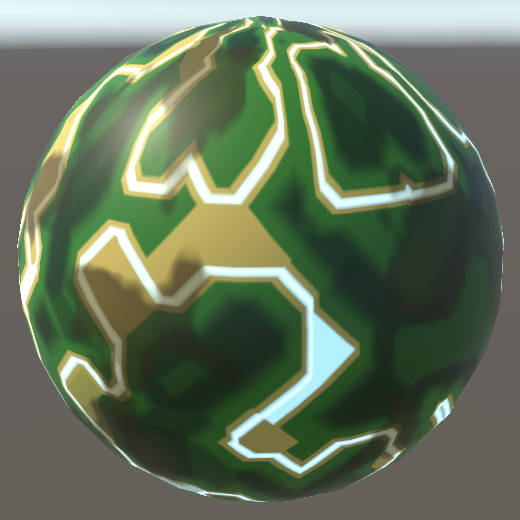
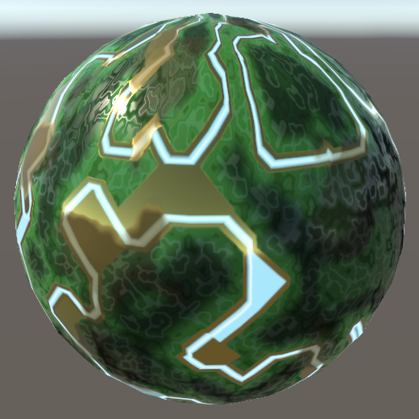
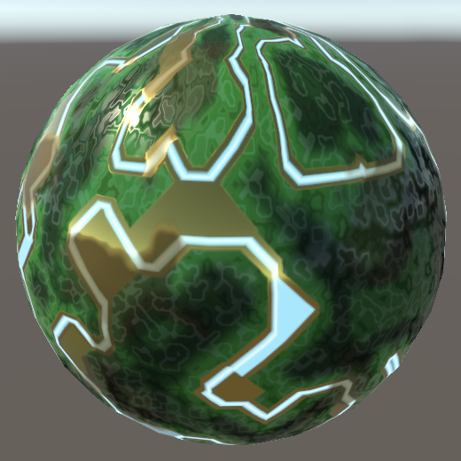

Complex Maps
Masks, Details, and Normals
- Create a circuitry-like material.
- Add support for a MODS mask map.
- Introduce a secondary detail map.
- Perform tangent-space normal mapping.
This is the eighth part of a tutorial series about creating a custom scriptable render pipeline. It makes it possible to create complex surfaces by adding support for mask, detail, and normal maps.
This tutorial is made with Unity 2019.2.21f1.
Circuitry Material
Up to this point we've always used very simple materials to test our RP. But it should also support complex materials so we can represent more interesting surfaces. In this tutorial we'll create an artistic circuitry-like material, with the help of a few textures.
Albedo
The basis of our material is its albedo map. It consists of a few layers of different shades of green with gold on top. Each color area is uniform, except for some brown stains, which makes it easier to distinguish the details that we'll add later.

Create a new material with our Lit shader, using this albedo map. I set its tiling to 2 by 1 so the square texture wraps around a sphere without getting stretched too much. The poles of the default sphere will always get deformed a lot, which cannot be prevented.

Emission
We already support emission maps, so let's use one that adds a light blue illuminating pattern on top of the golden circuitry.
{kind=link}
Assign it to the material and set the emission color to white so it becomes visible.


Mask Map
Right now we cannot do much else to make our material more interesting. The golden circuitry is supposed to be metallic while the green board isn't, but we can currently only configure uniform metallic and smoothness values. We need additional maps to support varying them across the surface.
MODS
We could add a separate map for metallic and another for smoothness, but both only require a single channel each, so we could combine them in a single map. This map is known as a mask map, its individual channels masking different shader properties. We'll use the same format as Unity's HDRP, which is a MODS map. This stand for Metallic, Occlusion, Detail, and Smoothness, stored in the RGBA channels in that order.
Here is such a map for our circuitry. It has data in all its channels, but for the moment we'll only use its R and A channels. As this texture contains mask data instead of colors make sure that its sRGB (Color Texture) texture import property is disabled. Not doing this would lead to the GPU incorrectly applying a gamma-to-linear conversion when sampling the texture.
{kind=link}
Add a property for the mask map to Lit. Because it's a mask we'll use white as the default, which changes nothing.
[NoScaleOffset] _MaskMap("Mask (MODS)", 2D) = "white" {}
_Metallic ("Metallic", Range(0, 1)) = 0
_Smoothness ("Smoothness", Range(0, 1)) = 0.5

Mask Input
Add a GetMask function to LitInput that simply samples the mask texture and returns it.
TEXTURE2D(_BaseMap);
TEXTURE2D(_MaskMap);
…
float4 GetMask (float2 baseUV) {
return SAMPLE_TEXTURE2D(_MaskMap, sampler_BaseMap, baseUV);
}
Let's also tidy up the LitInput code a bit before we proceed. Define an INPUT_PROP macro with a name parameter to provide a shorthand for using the UNITY_ACCESS_INSTANCED_PROP macro.
#define INPUT_PROP(name) UNITY_ACCESS_INSTANCED_PROP(UnityPerMaterial, name)
Now we can simplify the code of all getter functions. I've only shown the change for retrieving _BaseMap_ST in GetBase.
float4 baseST = INPUT_PROP(_BaseMap_ST);
This change can also be applied to the code in UnlitInput.
Metallic
LitPass shouldn't need to know whether some properties rely on the mask map or not. The individual functions can retrieve the mask when needed. Do so in GetMetallic, masking its result with the mask's R channel via multiplication.
float GetMetallic (float2 baseUV) {
float metallic = INPUT_PROP(_Metallic);
metallic *= GetMask(baseUV).r;
return metallic;
}
Metallic maps are usually mostly binary. In our case the golden circuitry is fully metallic and the green board isn't. The golden stained areas are an exception, being a little less metallic.
Smoothness
Do this same thing in GetSmoothness, this time relying on the mask's A channel. The golden circuitry is quite smooth while the green board isn't.
float GetSmoothness (float2 baseUV) {
float smoothness = INPUT_PROP(_Smoothness);
smoothness *= GetMask(baseUV).a;
return smoothness;
}

Occlusion
The mask's G channel contains occlusion data. The idea is that small receded areas like gaps and holes are mostly shadowed by the rest of an object, but if those features are represented by a texture only this gets ignored by lighting. The missing occlusion data is provided by the mask. Add a new GetOcclusion function to get it, initially always returning zero to demonstrate its maximum effect.
float GetOcclusion (float2 baseUV) {
return 0.0;
}
Add the occlusion data to the Surface struct.
struct Surface {
…
float occlusion;
float smoothness;
float fresnelStrength;
float dither;
};
And initialize it in LitPassFragment.
surface.metallic = GetMetallic(input.baseUV); surface.occlusion = GetOcclusion(input.baseUV); surface.smoothness = GetSmoothness(input.baseUV);
The idea is that occlusion only applies to indirect environmental lighting. Direct light is unaffected, so gaps don't remain dark when a light source is pointed directly at them. Thus we use occlusion to modulate the result of IndirectBRDF only.
float3 IndirectBRDF (
Surface surface, BRDF brdf, float3 diffuse, float3 specular
) {
…
return (diffuse * brdf.diffuse + reflection) * surface.occlusion;
}
After having verified that it works have GetOcclusion return the G channel of the mask.
float GetOcclusion (float2 baseUV) {
return GetMask(baseUV).g;
}

Some parts of the green board are lower than others, thus they should be occluded a bit. The areas are large and the occlusion map is at maximum strength to make the effect clearly visible, but the result is too strong to make sense. Rather than create another mask map with better occlusion data let's add an occlusion strength slider property to our shader.
[NoScaleOffset] _MaskMap("Mask (MODS)", 2D) = "white" {}
_Metallic ("Metallic", Range(0, 1)) = 0
_Occlusion ("Occlusion", Range(0, 1)) = 1
_Smoothness ("Smoothness", Range(0, 1)) = 0.5
Add it to the UnityPerMaterial buffer.
UNITY_INSTANCING_BUFFER_START(UnityPerMaterial) … UNITY_DEFINE_INSTANCED_PROP(float, _Occlusion) UNITY_DEFINE_INSTANCED_PROP(float, _Smoothness) UNITY_DEFINE_INSTANCED_PROP(float, _Fresnel) UNITY_INSTANCING_BUFFER_END(UnityPerMaterial)
Then adjust GetOcclusion so it modulates the mask with the property. In this case the slider controls the strength of the mask, so if it's set to zero the mask should be fully ignored. We can do this by interpolating between the mask and 1 based on the strength.
float GetOcclusion (float2 baseUV) {
float strength = INPUT_PROP(_Occlusion);
float occlusion = GetMask(baseUV).g;
occlusion = lerp(occlusion, 1.0, strength);
return occlusion;
}
Detail Map
The next step is to add some details to our material. We do this by sampling a detail texture with a higher tiling than the base map and combining it with the base and mask data. This makes the surface more interesting and also provides higher-resolution information when the surface is viewed up close, where the base map on its own would appear pixelated.
Details are supposed to only modify surface properties a little, so once again we'll combine data in a single non-color map. The HDRP uses a ANySNx format, which means it stores albedo modulation in R, smoothness modulation in B, and a detail normal vector's XY components in AG. But our map won't contain normal vectors, so we only use the RB channels. Thus it's an RGB texture, not RGBA.

Detail UV coordinates
Because the detail map is supposed to use a higher tiling than the base map it needs its own tiling and offset. Add a material property for it, this time without the NoScaleOffset attribute. Its default should cause no change, which we get by using linearGrey, as values of 0.5 will be considered neutral.
[NoScaleOffset] _EmissionMap("Emission", 2D) = "white" {}
[HDR] _EmissionColor("Emission", Color) = (0.0, 0.0, 0.0, 0.0)
_DetailMap("Details", 2D) = "linearGrey" {}

Add the required texture, sampler state, and scale-offset properties to LitInput, along with a TransformDetailUV function to transform the detail texture coordinates.
TEXTURE2D(_DetailMap);
SAMPLER(sampler_DetailMap);
UNITY_INSTANCING_BUFFER_START(UnityPerMaterial)
UNITY_DEFINE_INSTANCED_PROP(float4, _BaseMap_ST)
UNITY_DEFINE_INSTANCED_PROP(float4, _DetailMap_ST)
…
UNITY_INSTANCING_BUFFER_END(UnityPerMaterial)
…
float2 TransformDetailUV (float2 detailUV) {
float4 detailST = INPUT_PROP(_DetailMap_ST);
return detailUV * detailST.xy + detailST.zw;
}
Then add a GetDetail function to retrieve all detail data, given detail UV.
float4 GetDetail (float2 detailUV) {
float4 map = SAMPLE_TEXTURE2D(_DetailMap, sampler_DetailMap, detailUV);
return map;
}
Transform the coordinates in LitPassVertex and pass them along via Varyings.
struct Varyings {
…
float2 baseUV : VAR_BASE_UV;
float2 detailUV : VAR_DETAIL_UV;
…
};
Varyings LitPassVertex (Attributes input) {
…
output.baseUV = TransformBaseUV(input.baseUV);
output.detailUV = TransformDetailUV(input.baseUV);
return output;
}
Detailed Albedo
To add details to albedo we have to add a parameter for the detail UV to GetBase, which we'll set to zero by default so existing code doesn't break. Begin by simply adding all detail direct to the base map, before factoring in the color tint.
float4 GetBase (float2 baseUV, float2 detailUV = 0.0) {
float4 map = SAMPLE_TEXTURE2D(_BaseMap, sampler_BaseMap, baseUV);
float4 color = INPUT_PROP(_BaseColor);
float4 detail = GetDetail(detailUV);
map += detail;
return map * color;
}
Then pass the detail UV to it in LitPassFragment.
float4 base = GetBase(input.baseUV, input.detailUV);
This confirms that the detail data gets sampled correctly, but we're not interpreting it correctly yet. First, values of 0.5 are neutral. Higher values should increase or brighten, while lower values should decrease or darken. The first step to make this work is converting the detail value range from 0–1 to −1–1 in GetDetail.
float4 GetDetail (float2 detailUV) {
float4 map = SAMPLE_TEXTURE2D(_DetailMap, sampler_DetailMap, detailUV);
return map * 2.0 - 1.0;
}
Second, only the R channel affects albedo, pushing it toward either black or white. This can be done by interpolating the color with either 0 or 1, depending on the sign of the detail. The interpolator is then the absolute detail value. This should only affect albedo, not the base's alpha channel.
float detail = GetDetail(detailUV).r;//map += detail;map.rgb = lerp(map.rgb, detail < 0.0 ? 0.0 : 1.0, abs(detail));
This works and is very obvious, because our detail map is very strong. But the brightening effect appear stronger than the darkening effect. That's because we're applying the modification in linear space. Doing it in gamma space would better match a visually equal distribution. We can approximate this by interpolating the square root of the albedo, and squaring afterwards.
map.rgb = lerp(sqrt(map.rgb), detail < 0.0 ? 0.0 : 1.0, abs(detail)); map.rgb *= map.rgb;
The details currently get applied to the entire surface, but the idea is that most of the golden circuitry is unaffected. That's what the detail mask is for, stored in the B channel of the mask map. We can apply it by factoring it into the interpolator.
float mask = GetMask(baseUV).b; map.rgb = lerp(sqrt(map.rgb), detail < 0.0 ? 0.0 : 1.0, abs(detail) * mask);
Our details are at maximum possible strength, which is far too strong. Let's introduce a detail albedo strength slider property to scale them down.
_DetailMap("Details", 2D) = "linearGrey" {}
_DetailAlbedo("Detail Albedo", Range(0, 1)) = 1
Add it to UnityPerMaterial and multiply it with the detail in GetBase.
UNITY_INSTANCING_BUFFER_START(UnityPerMaterial)
…
UNITY_DEFINE_INSTANCED_PROP(float, _DetailAlbedo)
UNITY_INSTANCING_BUFFER_END(UnityPerMaterial)
…
float4 GetBase (float2 baseUV, float2 detailUV = 0.0) {
…
float detail = GetDetail(detailUV).r * INPUT_PROP(_DetailAlbedo);
…
}

Detailed Smoothness
Adding details to smoothness works the same way. First, add a strength slider property for it as well.
_DetailAlbedo("Detail Albedo", Range(0, 1)) = 1
_DetailSmoothness("Detail Smoothness", Range(0, 1)) = 1
Then add the property to UnityPerMaterial, retrieve the scaled detail in GetSmoothness, and interpolate in the same way. This time we need the B channel of the detail map.
UNITY_INSTANCING_BUFFER_START(UnityPerMaterial)
…
UNITY_DEFINE_INSTANCED_PROP(float, _DetailSmoothness)
UNITY_INSTANCING_BUFFER_END(UnityPerMaterial)
…
float GetSmoothness (float2 baseUV, float2 detailUV = 0.0) {
float smoothness = INPUT_PROP(_Smoothness);
smoothness *= GetMask(baseUV).a;
float detail = GetDetail(detailUV).b * INPUT_PROP(_DetailSmoothness);
float mask = GetMask(baseUV).b;
smoothness = lerp(smoothness, detail < 0.0 ? 0.0 : 1.0, abs(detail) * mask);
return smoothness;
}
Have LitPassFragment pass the detail UV to GetSmoothness as well.
surface.smoothness = GetSmoothness(input.baseUV, input.detailUV);

 

Fading Details
Details only matter when they are sufficiently large, visually. Details shouldn't be applied when they're too small, because that can produce a noisy result. Mip mapping blurs the data as usual, but for details we want to go a step further and fade them out as well.

Unity can fade details automatically for us, if we enabled the Fadeout Mip Maps import option of our detail texture. A range slider will show up, which controls at which mip level the fading starts and ends. Unity simply interpolates the mip maps to gray, which means the map becomes neutral. For this to work the texture's Filter Mode must be set to Trilinear, which should happen automatically.


Normal Maps
Even though we've made our surface a lot more complex it still appears flat, because it is. Lighting interacts with the surface normal, which gets smoothly interpolated across every triangle. Our surface would be much more believable if lighting also interacts with its smaller features. We can do that by adding support for normal maps.
Typically normal maps are generated from a high-polygon-density 3D model which gets baked to a lower-poly model for realtime use. The normal vectors of high-poly geometry that are lost get baked in a normal map. Alternatively, the normal map is generated procedurally. Here is such a map for our circuitry. Set its Texture Type to Normal map after importing it.

This map follows the standard tangent-space normal map convention of storing the up axis–designated as Z in this case—in the B channel, while the right and forward XY axes are stored in RG. Just like the detail map the −1-1 range of normal components are converted so 0.5 is the midpoint. Thus flat areas appear bluish.
Sampling Normals
To sample the normals we have to add a normal map texture property to our shader, with bump as its default, representing a flat map. Also add a normal scale property so we can control the map's strength.
[NoScaleOffset] _NormalMap("Normals", 2D) = "bump" {}
_NormalScale("Normal Scale", Range(0, 1)) = 1
The most straightforward way to store the normal information is as described above—XYZ in the RGB channels—but this isn't the most efficient way. If we assume that the normal vectors always point up and never down we can omit the upward component and derive it from the other two. Those channels can then be stored in a compressed texture format in such a way that loss of precision is minimized. XY get stored in either RG or AG, depending on the texture format. This would change the appearance of the texture, but the Unity editor only shows previews and thumbnails of the original map.
Whether normal maps are changed depends on the target platform. If the maps aren't changed then UNITY_NO_DXT5nm is defined. If so we can use the UnpackNormalRGB function to convert the sampled normal data, otherwise we can use UnpackNormalmapRGorAG. Both have a sample and a scale parameter and are defined in the Packing file from the Core RP Library. Add a function to Common that uses those functions to decode the normal data.
#include "Packages/com.unity.render-pipelines.core/ShaderLibrary/SpaceTransforms.hlsl"
#include "Packages/com.unity.render-pipelines.core/ShaderLibrary/Packing.hlsl"
…
float3 DecodeNormal (float4 sample, float scale) {
#if defined(UNITY_NO_DXT5nm)
return UnpackNormalRGB(sample, scale);
#else
return UnpackNormalmapRGorAG(sample, scale);
#endif
}
Now add the normal map, normal scale, and a GetNormalTS function to LitInput and retrieve and decode the normal vector.
TEXTURE2D(_NormalMap);
…
UNITY_INSTANCING_BUFFER_START(UnityPerMaterial)
…
UNITY_DEFINE_INSTANCED_PROP(float, _NormalScale)
UNITY_INSTANCING_BUFFER_END(UnityPerMaterial)
…
float3 GetNormalTS (float2 baseUV) {
float4 map = SAMPLE_TEXTURE2D(_NormalMap, sampler_BaseMap, baseUV);
float scale = INPUT_PROP(_NormalScale);
float3 normal = DecodeNormal(map, scale);
return normal;
}
Tangent Space
Because textures wrap around geometry their orientation in object and world space isn't uniform. Thus the space in which the normals are stored curves to match the geometry's surface. The only constant is that the space is tangential to the surface, which is why it is known as tangent space. The Y up axis of this space matches the surface normal. Besides that, it must have an X right axis that's tangential to the surface. If we have those two we can generate the Z forward axis from that.
Because the X axis of tangent space isn't constant it has to be defined as part of the mesh vertex data. It's stored as a four-component tangent vector. Its XYZ components define the axis in object space. Its W component is either −1 or 1, which is used to control in which direction the Z axis points. This is used to flip normal maps for meshes with bilateral symmetry—which most animals have—so the same map can be used for both sides of the mesh, halving the required texture size.
So if we have world-space normal and tangent vectors we can construct a conversion matrix from tangent to world space. We can use the existing CreateTangentToWorld function for this, passing it the normal, tangent XYZ, and tangent W as arguments. Then we can invoke TransformTangentToWorld with the tangent-space normal and conversion matrix as arguments. Add a function that does all this to Common.
float3 NormalTangentToWorld (float3 normalTS, float3 normalWS, float4 tangentWS) {
float3x3 tangentToWorld =
CreateTangentToWorld(normalWS, tangentWS.xyz, tangentWS.w);
return TransformTangentToWorld(normalTS, tangentToWorld);
}
Next, add the object-space tangent vector with the TANGENT semantic to Attributes and a world-space tangent to Varyings in LitPass.
struct Attributes {
float3 positionOS : POSITION;
float3 normalOS : NORMAL;
float4 tangentOS : TANGENT;
…
};
struct Varyings {
float4 positionCS : SV_POSITION;
float3 positionWS : VAR_POSITION;
float3 normalWS : VAR_NORMAL;
float4 tangentWS : VAR_TANGENT;
…
};
The XYZ portion of the tangent vector can be converted to world space in LitPassVertex by invoking TransformObjectToWorldDir.
output.normalWS = TransformObjectToWorldNormal(input.normalOS); output.tangentWS = float4(TransformObjectToWorldDir(input.tangentOS.xyz), input.tangentOS.w);
Finally, we get the final mapped normal by invoking NormalTangentToWorld in LitPassFragment.
surface.normal = NormalTangentToWorld( GetNormalTS(input.baseUV), input.normalWS, input.tangentWS );

Interpolated Normal for Shadow Bias
Perturbing the normal vector is appropriate for lighting the surface, but we also use the fragment normal to bias shadow sampling. We should use the original surface normal for that. So add a field for it to Surface.
struct Surface {
float3 position;
float3 normal;
float3 interpolatedNormal;
…
};
Assign the normal vector in LitPassFragment. In this case we can usually get away with skipping normalizing the vector, as most meshes don't have vertex normals that curve so much per triangle that it would negatively affect shadow biasing.
surface.normal = NormalTangentToWorld( GetNormalTS(input.baseUV), input.normalWS, input.tangentWS ); surface.interpolatedNormal = input.normalWS;
Then use this vector in GetCascadedShadow.
float GetCascadedShadow (
DirectionalShadowData directional, ShadowData global, Surface surfaceWS
) {
float3 normalBias = surfaceWS.interpolatedNormal *
(directional.normalBias * _CascadeData[global.cascadeIndex].y);
…
if (global.cascadeBlend < 1.0) {
normalBias = surfaceWS.interpolatedNormal *
(directional.normalBias * _CascadeData[global.cascadeIndex + 1].y);
…
}
return shadow;
}
Detailed Normals
We can include a normal map for details as well. Although the HDRP combines the detail normal with the albedo and smoothness in a single map, we'll use a separate texture. Turn the imported texture into a normal map and enable Fadeout Mip Maps so its fades out like the other details.
{kind=link}
Add shader properties for the map and again for the normal scale.
_DetailMap("Details", 2D) = "linearGrey" {}
[NoScaleOffset] _DetailNormalMap("Detail Normals", 2D) = "bump" {}
_DetailAlbedo("Detail Albedo", Range(0, 1)) = 1
_DetailSmoothness("Detail Smoothness", Range(0, 1)) = 1
_DetailNormalScale("Detail Normal Scale", Range(0, 1)) = 1
Adjust GetNormalTS by adding a detail UV parameter and sample the detail map. In this case we can apply the mask by factoring it into the detail normal strength. After that we have to combine both normals, which we can do by invoking BlendNormalRNM with the original and detail normals. This function rotates the detail normal around the base normal.
float3 GetNormalTS (float2 baseUV, float2 detailUV = 0.0) {
float4 map = SAMPLE_TEXTURE2D(_NormalMap, sampler_BaseMap, baseUV);
float scale = INPUT_PROP(_NormalScale);
float3 normal = DecodeNormal(map, scale);
map = SAMPLE_TEXTURE2D(_DetailNormalMap, sampler_DetailMap, detailUV);
scale = INPUT_PROP(_DetailNormalScale) * GetMask(baseUV).b;
float3 detail = DecodeNormal(map, scale);
normal = BlendNormalRNM(normal, detail);
return normal;
}
Finally, pass the detail UV to GetNormalTS.
surface.normal = NormalTangentToWorld( GetNormalTS(input.baseUV, input.detailUV), input.normalWS, input.tangentWS );
Optional Maps
Not every material needs all maps that we currently support. Leaving a map unassigned means that the result doesn't get altered, but the shader still does all the work, using the default texture. We can avoid unneeded work by adding a few shader features to control which maps get used by the shader. Unity's shaders do this automatically based on which maps are assigned in the editor, but we'll control this with explicit toggles.
Normal Maps
We start with normal maps, which are the most expensive features. Add a toggle shader property linked to an appropriate keyword.
[Toggle(_NORMAL_MAP)] _NormalMapToggle ("Normal Map", Float) = 0
[NoScaleOffset] _NormalMap("Normals", 2D) = "bump" {}
_NormalScale("Normal Scale", Range(0, 1)) = 1
Add a matching shader feature pragma to the CustomLit pass only. None of the other passes need mapped normals so shouldn't get the feature.
#pragma shader_feature _NORMAL_MAP
In LitPassFragment, either use the tangent-space normal or just normalize the interpolated normal, based on the keyword. And in the latter case we might as well use the normalized version for the interpolated normal.
#if defined(_NORMAL_MAP) surface.normal = NormalTangentToWorld( GetNormalTS(input.baseUV, input.detailUV), input.normalWS, input.tangentWS ); surface.interpolatedNormal = input.normalWS; #else surface.normal = normalize(input.normalWS); surface.interpolatedNormal = surface.normal; #endif
Also, omit the tangent vector from Varyings if possible. We don't need to omit it from Attributes because it'll get automatically ignored there if we don't use it.
struct Varyings {
…
#if defined(_NORMAL_MAP)
float4 tangentWS : VAR_TANGENT;
#endif
…
};
Varyings LitPassVertex (Attributes input) {
…
#if defined(_NORMAL_MAP)
output.tangentWS = float4(
TransformObjectToWorldDir(input.tangentOS.xyz), input.tangentOS.w
);
#endif
…
}
Input Config
At this point we should reconsider how we pass data to the getter functions of LitInput. We can end up with any combination of using or not using multiple things, which we have to communicate somehow. Let's do this by introducing an InputConfig struct, initially bundling base and detail UV coordinates. Also create a convenient GetInputConfig function that returns a config given base UV and optional detail UV.
struct InputConfig {
float2 baseUV;
float2 detailUV;
};
InputConfig GetInputConfig (float2 baseUV, float2 detailUV = 0.0) {
InputConfig c;
c.baseUV = baseUV;
c.detailUV = detailUV;
return c;
}
Now adjust all LitInput functions except TransformBaseUV and TransformDetailUV so they have a single config parameter. I only show the changes to GetBase.
float4 GetBase (InputConfig c) {
float4 map = SAMPLE_TEXTURE2D(_BaseMap, sampler_BaseMap, c.baseUV);
float4 color = INPUT_PROP(_BaseColor);
float detail = GetDetail(c).r * INPUT_PROP(_DetailAlbedo);
float mask = GetMask(c).b;
…
}
Then adjust LitPassFragment so it uses the new config approach.
InputConfig config = GetInputConfig(input.baseUV, input.detailUV); float4 base = GetBase(config); #if defined(_CLIPPING) clip(base.a - GetCutoff(config)); #endif Surface surface; surface.position = input.positionWS; #if defined(_NORMAL_MAP) surface.normal = NormalTangentToWorld( GetNormalTS(config), input.normalWS, input.tangentWS ); #else surface.normal = normalize(input.normalWS); #endif … surface.metallic = GetMetallic(config); surface.occlusion = GetOcclusion(config); surface.smoothness = GetSmoothness(config); surface.fresnelStrength = GetFresnel(config); … color += GetEmission(config);
Adjust the other passes—MetaPass, ShadowCasterPass, and UnlitPass—to use the new approach as well. This means that we also have to make UnlitPass use the new approach.
Optional Mask Map
Next, let's make the mask map optional by adding a boolean for it to InputConfig, set to false by default.
struct InputConfig {
float2 baseUV;
float2 detailUV;
bool useMask;
};
InputConfig GetInputConfig (float2 baseUV, float2 detailUV = 0.0) {
InputConfig c;
c.baseUV = baseUV;
c.detailUV = detailUV;
c.useMask = false;
return c;
}
We can avoid sampling the mask by simply returning 1 in GetMask. This assumes that the mask toggle is constant, so it won't cause a branch in the shader.
float4 GetMask (InputConfig c) {
if (c.useMask) {
return SAMPLE_TEXTURE2D(_MaskMap, sampler_BaseMap, c.baseUV);
}
return 1.0;
}
Add a toggle for it to our shader.
[Toggle(_MASK_MAP)] _MaskMapToggle ("Mask Map", Float) = 0
[NoScaleOffset] _MaskMap("Mask (MODS)", 2D) = "white" {}
Along with the relevant pragma in the CustomLit pass.
#pragma shader_feature _MASK_MAP
Now turn on the mask in LitPassFragment only when needed.
InputConfig config = GetInputConfig(input.baseUV, input.detailUV); #if defined(_MASK_MAP) config.useMask = true; #endif
Optional Detail
Using the same approach, add a toggle for detail to InputConfig, again disabled by default.
struct InputConfig {
…
bool useDetail;
};
InputConfig GetInputConfig (float2 baseUV, float2 detailUV = 0.0) {
…
c.useDetail = false;
return c;
}
Only sample the detail map in GetDetail when needed, otherwise return zero.
float4 GetDetail (InputConfig c) {
if (c.useDetail) {
float4 map = SAMPLE_TEXTURE2D(_DetailMap, sampler_DetailMap, c.detailUV);
return map * 2.0 - 1.0;
}
return 0.0;
}
That avoids sampling the detail map, but incorporating the details still happens. To stop that also skip the relevant code in GetBase.
if (c.useDetail) {
float detail = GetDetail(c).r * INPUT_PROP(_DetailAlbedo);
float mask = GetMask(c).b;
map.rgb =
lerp(sqrt(map.rgb), detail < 0.0 ? 0.0 : 1.0, abs(detail) * mask);
map.rgb *= map.rgb;
}
And in GetSmoothness.
if (c.useDetail) {
float detail = GetDetail(c).b * INPUT_PROP(_DetailSmoothness);
float mask = GetMask(c).b;
smoothness =
lerp(smoothness, detail < 0.0 ? 0.0 : 1.0, abs(detail) * mask);
}
And in GetNormalTS.
if (c.useDetail) {
map = SAMPLE_TEXTURE2D(_DetailNormalMap, sampler_DetailMap, c.detailUV);
scale = INPUT_PROP(_DetailNormalScale) * GetMask(c).b;
float3 detail = DecodeNormal(map, scale);
normal = BlendNormalRNM(normal, detail);
}
Then add a toggle property for the details to the shader.
[Toggle(_DETAIL_MAP)] _DetailMapToggle ("Detail Maps", Float) = 0
_DetailMap("Details", 2D) = "linearGrey" {}
Once again with an accompanying shader feature in CustomLit.
#pragma shader_feature _DETAIL_MAP
Now we only need to include detail UV in Varyings when the relevant keyword is defined.
struct Varyings {
…
#if defined(_DETAIL_MAP)
float2 detailUV : VAR_DETAIL_UV;
#endif
…
};
Varyings LitPassVertex (Attributes input) {
…
#if defined(_DETAIL_MAP)
output.detailUV = TransformDetailUV(input.baseUV);
#endif
return output;
}
Finally, include details in LitPassFragment only when needed.
InputConfig config = GetInputConfig(input.baseUV); #if defined(_MASK_MAP) config.useMask = true; #endif #if defined(_DETAIL_MAP) config.detailUV = input.detailUV; config.useDetail = true; #endif
The next tutorial is Point and Spot Lights.